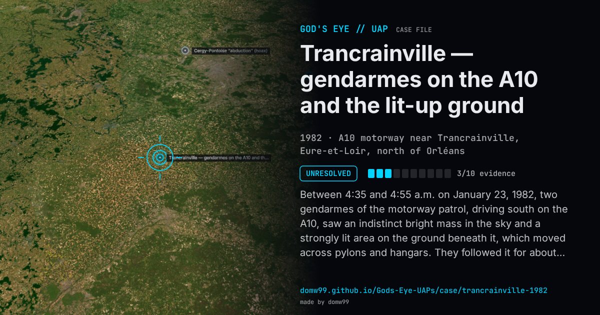

Trancrainville — gendarmes on the A10 and the lit-up ground

Between 4:35 and 4:55 a.m. on January 23, 1982, two gendarmes of the motorway patrol, driving south on the A10, saw an indistinct bright mass in the sky and a strongly lit area on the ground beneath it, which moved across pylons and hangars. They followed it for about 30 km, driving and stopping, losing and finding it again, and heard nothing even with the engine off; at the end only a glow remained to the east over the trees. The Orléans air base, 7 km away, had nothing flying and its radar had been off since the evening before, and the motorway operator’s staff had seen nothing. Re-examining the case, GEIPAN rejected planets (they cannot light the ground) and judged a helicopter with a searchlight above the cloud, then at 1,200–1,500 m, too unlikely for the equipment of the time. It is class D, unexplained, with the caveat that no field interview could be made.
What was seen
Shape: An indistinct bright mass in the sky, and a strongly lit patch on the ground
Witnesses: Two gendarmes of the motorway patrol
Duration: About 20 minutes